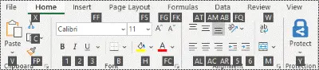

Many users find that using an external keyboard with keyboard shortcuts for Excel helps them work more efficiently. For users with mobility or vision disabilities, keyboard shortcuts can be easier than using the touchscreen and are an essential alternative to using a mouse.
| To do this | Press |
|---|---|
| Close a workbook. | Ctrl+W |
| Open a workbook. | Ctrl+O |
| Go to the Home tab. | Alt+H |
| Save a workbook. | Ctrl+S |
| Copy selection. | Ctrl+C |
| Paste selection. | Ctrl+V |
| Undo recent action. | Ctrl+Z |
| Remove cell contents. | Delete |
| Choose a fill color. | Alt+H, H |
| Cut selection. | Alt+N |
| Go to the Insert tab. | Ctrl+X |
| Apply bold formatting. | Ctrl+B |
| Center align cell contents. | Alt+H, A, C |
| Go to the Page Layout tab. | Alt+P |
| Go to the Data tab. | Alt+A |
| Go to the View tab. | Alt+W |
| Open the context menu. | Shift+F10 or Windows Menu key |
| Add borders. | Alt+H, B |
| Delete column. | Alt+H, D, C |
| Go to the Formula tab. | Alt+M |
| Hide the selected rows. | Ctrl+9 |
| Hide the selected columns. | Ctrl+0 |
The ribbon groups related options on tabs. For example, on the Home tab, the Number group includes the Number Format option. Press the Alt key to display the ribbon shortcuts, called Key Tips, as letters in small images next to the tabs and options as shown in the image below.
You can combine the Key Tips letters with the Alt key to make shortcuts called Access Keys for the ribbon options. For example, press Alt+H to open the Home tab, and Alt+Q to move to the Tell me or Search field. Press Alt again to see KeyTips for the options for the selected tab.
Depending on the version of Microsoft 365 you are using, the Search text field at the top of the app window might be called Tell Me instead. Both offer a largely similar experience, but some options and search results can vary.
In Office 2013 and Office 2010, most of the old Alt key menu shortcuts still work, too. However, you need to know the full shortcut. For example, press Alt, and then press one of the old menu keys, for example, E (Edit), V (View), I (Insert), and so on. A notification pops up saying you're using an access key from an earlier version of Microsoft 365. If you know the entire key sequence, go ahead, and use it. If you don't know the sequence, press Esc and use Key Tips instead.
To go directly to a tab on the ribbon, press one of the following access keys. Additional tabs might appear depending on your selection in the worksheet.
| To do this | Press |
|---|---|
| Move to the Tell me or Search field on the ribbon and type a search term for assistance or Help content. | Alt+Q, then enter the search term. |
| Open the File menu. | Alt+F |
| Open the Home tab and format text and numbers and use the Find tool. | Alt+H |
| Open the Insert tab and insert PivotTables, charts, add-ins, Sparklines, pictures, shapes, headers, or text boxes. | Alt+N |
| Open the Page Layout tab and work with themes, page setup, scale, and alignment. | Alt+P |
| Open the Formulas tab and insert, trace, and customize functions and calculations. | Alt+M |
| Open the Data tab and connect to, sort, filter, analyze, and work with data. | Alt+A |
| Open the Review tab and check spelling, add notes and threaded comments, and protect sheets and workbooks. | Alt+R |
| Open the View tab and preview page breaks and layouts, show and hide gridlines and headings, set zoom magnification, manage windows and panes, and view macros. | Alt+W |
| To do this | Press |
|---|---|
| Select the active tab on the ribbon and activate the access keys. | Alt or F10. To move to a different tab, use access keys or the arrow keys. |
| Move the focus to commands on the ribbon. | Tab key or Shift+Tab |
| Move down, up, left, or right, respectively, among the items on the ribbon. | Arrow keys |
| Show the tooltip for the ribbon element currently in focus. | Ctrl+Shift+F10 |
| Activate a selected button. | Spacebar or Enter |
| Open the list for a selected command. | Down arrow key |
| Open the menu for a selected button. | Alt+Down arrow key |
| When a menu or submenu is open, move to the next command. | Down arrow key |
| Expand or collapse the ribbon. | Ctrl+F1 |
| Open a context menu. | Shift+F10 Or, on a Windows keyboard, the Windows Menu key (usually between the Alt Gr and right Ctrl keys) |
| Move to the submenu when a main menu is open or selected. | Left arrow key |
| Move from one group of controls to another. | Ctrl+Left or Right arrow key |
| To do this | Press |
|---|---|
| Move to the previous cell in a worksheet or the previous option in a dialog box. | Shift+Tab |
| Move one cell up in a worksheet. | Up arrow key |
| Move one cell down in a worksheet. | Down arrow key |
| Move one cell right in a worksheet. | Right arrow key |
| Move to the edge of the current data region in a worksheet. | Ctrl+Arrow key |
| Enter the End mode, move to the next nonblank cell in the same column or row as the active cell, and turn off End mode. If the cells are blank, move to the last cell in the row or column. | End, Arrow key |
| Move to the last cell on a worksheet, to the lowest used row of the rightmost used column. | Ctrl+End |
| Extend the selection of cells to the last used cell on the worksheet (lower-right corner). | Ctrl+Shift+End |
| Move to the cell in the upper-left corner of the window when Scroll lock is turned on. | Home+Scroll lock |
| Move to the beginning of a worksheet. | Ctrl+Home |
| Move one screen down in a worksheet. | Page down |
| Move to the next sheet in a workbook. | Ctrl+Page down |
| Move one screen to the right in a worksheet. | Alt+Page down |
| Move one screen up in a worksheet. | Page up |
| Move one screen to the left in a worksheet. | Alt+Pag up |
| Move to the previous sheet in a workbook. | Ctrl+Page up |
| Move one cell to the right in a worksheet. Or, in a protected worksheet, move between unlocked cells. | Tab key |
| Open the list of validation choices on a cell that has data validation option applied to it. | Alt+Down arrow key |
| Cycle through floating shapes, such as text boxes or images. | Ctrl+Alt+5, then the Tab key repeatedly |
| Exit the floating shape navigation and return to the normal navigation. | Esc |
| Scroll horizontally. | Ctrl+Shift, then scroll your mouse wheel up to go left, down to go right |
| Zoom in. | Ctrl+Alt+Equal sign ( = ) |
| Zoom out. | Ctrl+Alt+Minus sign (-) |
| To do this | Press |
|---|---|
| Open the Format Cells dialog box. | Ctrl+1 |
| Format fonts in the Format Cells dialog box. | Ctrl+Shift+F or Ctrl+Shift+P |
| Edit the active cell and put the insertion point at the end of its contents. Or, if editing is turned off for the cell, move the insertion point into the formula bar. If editing a formula, toggle Point mode off or on so you can use the arrow keys to create a reference. | F2 |
| Insert a note. | Shift+F2 |
| Open and edit a cell note. | Shift+F2 |
| Insert a threaded comment. | Ctrl+Shift+F2 |
| Open and reply to a threaded comment. | Ctrl+Shift+F2 |
| Open the Insert dialog box to insert blank cells. | Ctrl+Shift+Plus sign (+) |
| Open the Delete dialog box to delete selected cells. | Ctrl+Minus sign (-) |
| Enter the current time. | Ctrl+Shift+Colon (:) |
| Enter the current date. | Ctrl+Semicolon (;) |
| Switch between displaying cell values or formulas in the worksheet. | Ctrl+Grave accent (`) |
| Copy a formula from the cell above the active cell into the cell or the formula bar. | Ctrl+Apostrophe (') |
| Move the selected cells. | Ctrl+X |
| Copy the selected cells. | Ctrl+C |
| Paste content at the insertion point, replacing any selection. | Ctrl+V |
| Open the Paste Special dialog box. | Ctrl+Alt+V |
| Italicize text or remove italic formatting. | Ctrl+I or Ctrl+3 |
| Bold text or remove bold formatting. | Ctrl+B or Ctrl+2 |
| Underline text or remove underline. | Ctrl+U or Ctrl+4 |
| Apply or remove strikethrough formatting. | Ctrl+5 |
| Switch between hiding objects, displaying objects, and displaying placeholders for objects. | Ctrl+6 |
| Apply an outline border to the selected cells. | Ctrl+Shift+Ampersand sign (&) |
| Remove the outline border from the selected cells. | Ctrl+Shift+Underscore (_) |
| Display or hide the outline symbols. | Ctrl+8 |
| Use the Fill Down command to copy the contents and format of the topmost cell of a selected range into the cells below. | Ctrl+D |
| Apply the General number format. | Ctrl+Shift+Tilde sign (~) |
| Apply the Currency format with two decimal places (negative numbers in parentheses). | Ctrl+Shift+Dollar sign ($) |
| Apply the Percentage format with no decimal places. | Ctrl+Shift+Percent sign (%) |
| Apply the Scientific number format with two decimal places. | Ctrl+Shift+Caret sign (^) |
| Apply the Date format with the day, month, and year. | Ctrl+Shift+Number sign (#) |
| Apply the Time format with the hour and minute, and AM or PM. | Ctrl+Shift+At sign (@) |
| Apply the Number format with two decimal places, thousands separator, and minus sign (-) for negative values. | Ctrl+Shift+Exclamation point (!) |
| Open the Insert hyperlink dialog box. | Ctrl+K |
| Check spelling in the active worksheet or selected range. | F7 |
| Display the Quick Analysis options for selected cells that contain data. | Ctrl+Q |
| Display the Create Table dialog box. | Ctrl+L or Ctrl+T |
| Open the Workbook Statistics dialog box. | Ctrl+Shift+G |
In Excel 2013, you can paste a specific aspect of the copied data like its formatting or value using the Paste Special options. After you've copied the data, press Ctrl+Alt+V, or Alt+E+S to open the Paste Special dialog box.
Tip: You can also select Home > Paste > Paste Special.
To pick an option in the dialog box, press the underlined letter for that option. For example, press the letter C to pick the Comments option.
| To do this | Press |
|---|---|
| Paste all cell contents and formatting. | A |
| Paste only the formulas as entered in the formula bar. | F |
| Paste only the values (not the formulas). | V |
| Paste only the copied formatting. | T |
| Paste only comments and notes attached to the cell. | C |
| Paste only the data validation settings from copied cells. | N |
| Paste all cell contents and formatting from copied cells. | H |
| Paste all cell contents without borders. | X |
| Paste only column widths from copied cells. | W |
| Paste only formulas and number formats from copied cells. | E |
| Paste only the values (not formulas) and number formats from copied cells. | U |
| To do this | Press |
|---|---|
| Select the entire worksheet. | Ctrl+A or Ctrl+Shift+Spacebar |
| Select the current and next sheet in a workbook. | Ctrl+Shift+Page down |
| Select the current and previous sheet in a workbook. | Ctrl+Shift+Page up |
| Extend the selection of cells by one cell. | Shift+Arrow key |
| Extend the selection of cells to the last nonblank cell in the same column or row as the active cell, or if the next cell is blank, to the next nonblank cell. | Ctrl+Shift+Arrow key |
| Turn extend mode on and use the arrow keys to extend a selection. Press again to turn off. | F8 |
| Add a non-adjacent cell or range to a selection of cells by using the arrow keys. | Shift+F8 |
| Start a new line in the same cell. | Alt+Enter |
| Fill the selected cell range with the current entry. | Ctrl+Enter |
| Complete a cell entry and select the cell above. | Shift+Enter |
| Select an entire column in a worksheet. | Ctrl+Spacebar |
| Select an entire row in a worksheet. | Shift+Spacebar |
| Select all objects on a worksheet when an object is selected. | Ctrl+Shift+Spacebar |
| Extend the selection of cells to the beginning of the worksheet. | Ctrl+Shift+Home |
| Select the current region if the worksheet contains data. Press a second time to select the current region and its summary rows. Press a third time to select the entire worksheet. | Ctrl+A or Ctrl+Shift+Spacebar |
| Select the current region around the active cell. | Ctrl+Shift+Asterisk sign (*) |
| Select the first command on the menu when a menu or submenu is visible. | Home |
| Repeat the last command or action, if possible. | Ctrl+Y |
| Undo the last action. | Ctrl+Z |
| Expand grouped rows or columns. | While hovering over the collapsed items, press and hold the Shift key and scroll down. |
| Collapse grouped rows or columns. | While hovering over the expanded items, press and hold the Shift key and scroll up. |
| To do this | Press |
|---|---|
| Turn on or off tooltips for checking formulas directly in the formula bar or in the cell you’re editing. | Ctrl+Alt+P |
| Edit the active cell and put the insertion point at the end of its contents. Or, if editing is turned off for the cell, move the insertion point into the formula bar. If editing a formula, toggle Point mode off or on so you can use the arrow keys to create a reference. | F2 |
| Expand or collapse the formula bar. | Ctrl+Shift+U |
| Cancel an entry in the cell or formula bar. | Esc |
| Complete an entry in the formula bar and select the cell below. | Enter |
| Move the cursor to the end of the text when in the formula bar. | Ctrl+End |
| Select all text in the formula bar from the cursor position to the end. | Ctrl+Shift+End |
| Calculate all worksheets in all open workbooks. | F9 |
| Calculate the active worksheet. | Shift+F9 |
| Calculate all worksheets in all open workbooks, regardless of whether they have changed since the last calculation. | Ctrl+Alt+F9 |
| Check dependent formulas, and then calculate all cells in all open workbooks, including cells not marked as needing to be calculated. | Ctrl+Alt+Shift+F9 |
| Display the menu or message for an Error Checking button. | Alt+Shift+F10 |
| Display the Function Arguments dialog box when the insertion point is to the right of a function name in a formula. | Ctrl+A |
| Insert argument names and parentheses when the insertion point is to the right of a function name in a formula. | Ctrl+Shift+A |
| Insert the AutoSum formula | Alt+Equal sign ( = ) |
| Invoke Flash Fill to automatically recognize patterns in adjacent columns and fill the current column | Ctrl+E |
| Cycle through all combinations of absolute and relative references in a formula if a cell reference or range is selected. | F4 |
| Insert a function. | Shift+F3 |
| Copy the value from the cell above the active cell into the cell or the formula bar. | Ctrl+Shift+Straight quotation mark (") |
| Create an embedded chart of the data in the current range. | Alt+F1 |
| Create a chart of the data in the current range in a separate Chart sheet. | F11 |
| Define a name to use in references. | Alt+M, M, D |
| Paste a name from the Paste Name dialog box (if names have been defined in the workbook). | F3 |
| Move to the first field in the next record of a data form. | Enter |
| Create, run, edit, or delete a macro. | Alt+F8 |
| Open the Microsoft Visual Basic For Applications Editor. | Alt+F11 |
| Open the Power Query Editor | Alt+F12 |
Use the following keys to refresh data from external data sources.
| To do this | Press |
|---|---|
| Stoip a refresh operation. | Esc |
| Refresh data in the current worksheet. | Ctrl+F5 |
| Refresh all data in the workbook | Ctrl+Alt+F5 |
Use the following keyboard shortcuts with Power Pivot in Microsoft 365, Excel 2019, Excel 2016, and Excel 2013.
| To do this | Press |
|---|---|
| Open the context menu for the selected cell, column, or row. | Shift+F10 |
| Select the entire table. | Ctrl+A |
| Copy selected data. | Ctrl+C |
| Delete the table. | Ctrl+D |
| Move the table. | Ctrl+M |
| Rename the table. | Ctrl+R |
| Save the file. | Ctrl+S |
| Redo the last action. | Ctrl+Y |
| Undo the last action. | Ctrl+Z |
| Select the current column. | Ctrl+Spacebar |
| Select the current row. | Shift+Spacebar |
| Select all cells from the current location to the last cell of the column. | Shift+Spacebar |
| Select all cells from the current location to the first cell of the column. | Shift+Page up |
| Select all cells from the current location to the last cell of the row. | Shift+End |
| Select all cells from the current location to the first cell of the row. | Shift+Home |
| Move to the previous table. | Ctrl+Page up |
| Move to the next table. | Ctrl+Page down |
| Move to the first cell in the upper-left corner of selected table. | Ctrl+Home |
| Move to the last cell in the lower-right corner of selected table. | Ctrl+End |
| Move to the first cell of the selected row. | Ctrl+Left arrow key |
| Move to the last cell of the selected row. | Ctrl+Right arrow key |
| Move to the first cell of the selected column. | Ctrl+Up arrow key |
| Move to the last cell of selected column. | Ctrl+Down arrow key |
| Close a dialog box or cancel a process, such as a paste operation. | Ctrl+Esc |
| Open the AutoFilter Menu dialog box. | Alt+Down arrow key |
| Open the Go To dialog box. | F5 |
| Recalculate all formulas in the Power Pivot window. For more information, see Recalculate Formulas in Power Pivot. | F9 |
| Key | Description |
|---|---|
| F1 |
|
| F2 |
|
| F3 |
|
| F4 |
|
| F5 |
|
| F6 |
|
| F7 |
|
| F8 |
|
| F9 |
|
| F10 |
|
| F11 |
|
| F12 |
|
| Key | Description |
|---|---|
| Alt |
For example, |
| Aroow keys |
|
| Backspace |
|
| Delete |
|
| End |
|
| Enter |
|
| Esc |
|
| Home |
|
| Page down |
|
| Page up |
|
| Shift |
|
| Spacebar |
|
| Tab key |
|